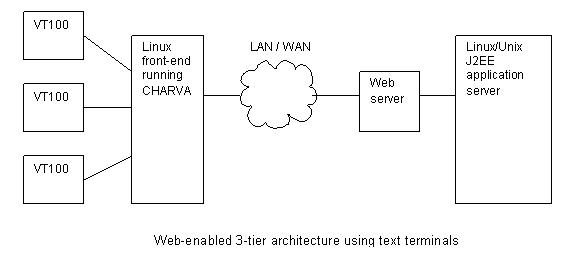

|
In some applications a full-fledged bit-mapped graphical user interface is
not feasible or appropriate. For example, you may be using
ruggedized mobile computers that only have an ASCII display; or you may need
to develop an administrative interface for a remote server or firewall, and
you don't have enough bandwidth for X Windows or
the
VNC protocol. In such cases, CHARVA may be your solution.
CHARVA is a Java framework for presenting a "graphical" user interface,
composed of elements such as windows, dialogs, menus, textfields and buttons,
on a traditional character-cell ASCII terminal. It has an API based on
that of "Swing" (a.k.a. the Java Foundation Classes). Programmers familiar
with AWT and Swing will find programming CHARVA straightforward.
User interfaces can be designed on WYSIWYG IDEs such as Borland JBuilder
and then easily converted to CHARVA merely by changing the "import" statements
to import the "charva.awt and "charvax.swing" packages instead of the
standard "java.awt" and "javax.swing" packages.
CHARVA was designed to bring the power and flexibility of Java to applications
on Linux/Unix systems (and has also been ported to Windows). ASCII
terminal-based applications can now benefit from Java features such as
object orientation, multithreading, automatic garbage-collection, and a
vast range of libraries such as:
- socket and HTTP networking using Java 2 Standard Edition
(J2SE)
- SSL and HTTPS encryption using Java Secure Socket Extension
(JSSE)
- asynchronous messaging using Java Message Service
(JMS)
- database access using Java Database Connectivity
(JDBC)
- mail access using
JavaMail
- XML parsing and generation using Xerces
from Apache.org
- and many more....
(click here for a list)
CHARVA now also has mouse support on terminal-emulators that report mouse
events, such as "xterm" and
"PuTTY"
Here are some benefits of CHARVA:
- The Total Cost of Ownership (TCO) of an ASCII terminal is considerably
lower than that of a PC. TCO refers to the total cost of acquiring,
deploying and maintaining equipment; in the case of a PC running MS-Windows and
configured as a GUI workstation, the ongoing maintenance cost (including
protecting the PC against viruses!) is considerable. For many applications
such as Point-of-Sale and Point-of-Service (POS), a graphical workstation
is complete overkill. ASCII terminals are still widely used for POS
applications, at least in the developing world.
- CHARVA addresses the headache of software distribution in a large network.
You can use a single Linux computer to serve many dozens of ASCII terminals / terminal-emulators,
each running its own instance of the same application. The Linux computer
can handle the user interface logic and communicate (using standard protocols
such as HTTP, HTTPS or RMI) via a network (LAN or WAN) with an Application
Server, which handles the business logic.

So instead of having to download a new version of the application to each
workstation, you download only one copy of the new version (to the
Linux front-end server).
- The memory footprint and CPU usage of the CHARVA framework are
considerably less than those of Swing. Provided you are using a terminal
with a high bit-rate (or a PC-based terminal-emulator such as
PuTTY on a LAN), the response
of CHARVA is much crisper than that of Swing. A single Linux
computer can support dozens of ASCII terminals running CHARVA-based
applications.
- CHARVA uses a standard, flexible and powerful API which is already familiar
to most Java programmers, thus enabling you to be productive without any
delay.
- CHARVA is licensed with the
GNU Lesser General Public License,
which essentially means that it is free for commercial and non-commercial use.
CHARVA is composed of two components:
- A library of Java classes that implement the various "graphical widgets"
- A dynamically-loaded shared library, written in C.
CHARVA is not a "Pure Java" package; the Java classes use the
Java Native
Interface (JNI) to call screen-handling functions provided by the shared
"libTerminal.so" library, which is linked with the
GNU ncurses
library. Porting CHARVA to a different platform involves recompiling the C
source code for the libTerminal.so shared library. GNU ncurses is supported
on dozens of Unix flavors besides Linux; CHARVA should be able to run on
any platform that supports both Java and ncurses.
CHARVA has been ported to the following operating systems and environments:
(OS-specific Makefiles are provided in the download tarball).
Charva has support for UTF-8 characters, so it can handle East European
character sets (e.g. Hungarian and Czech.).
Many developers have used CHARVA in their
applications, and have reported that it is reliable and stable.
|